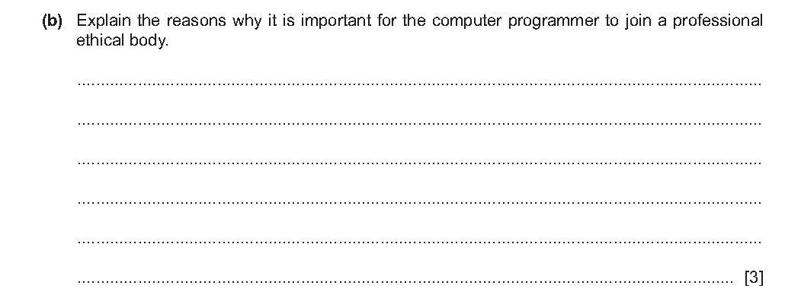
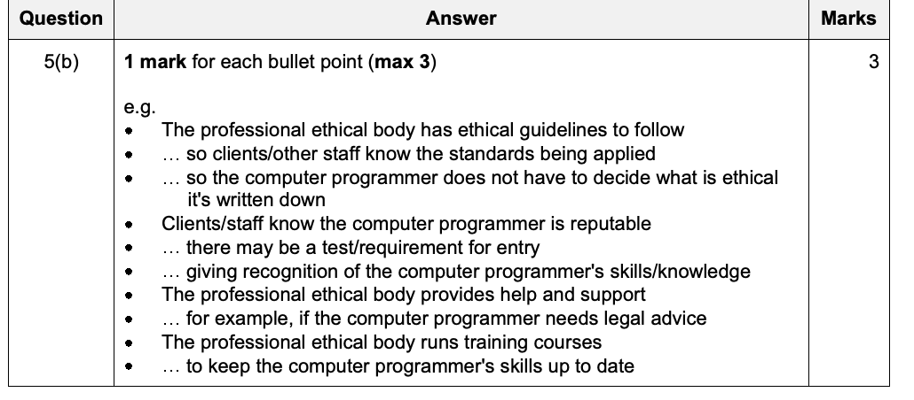
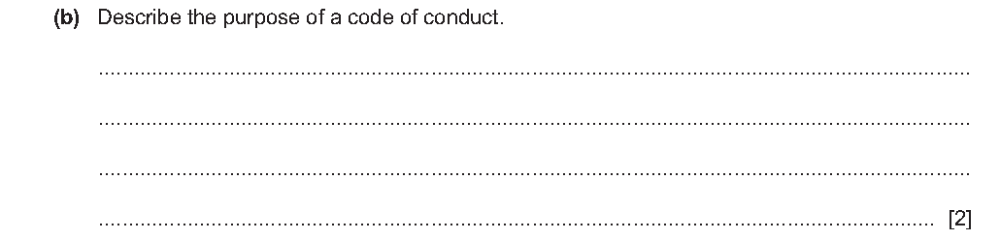
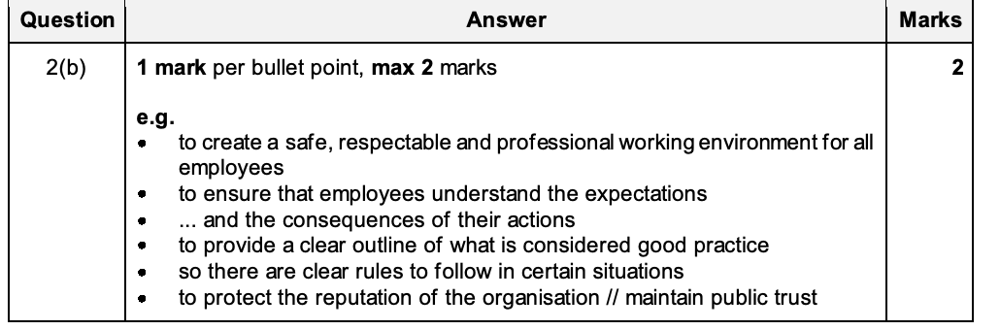

7.1.1
Professional ethical bodies
BCS · a professional body for computing
Who belongs?
Computing and IT practitioners, including programmers and systems professionals.
A shared code
Members commit to standards of professional behaviour and responsibility.
A professional community
Learning and professional contacts support continuing development.
A professional body is an organisation supporting people in a profession and its standards. BCS brings computing practitioners together around competent, responsible work.
IEEE · a professional body for engineering and technology
Who belongs?
Engineers and technology professionals, including people working in computing.
Code of Ethics
Members commit to integrity, competent work, fair treatment and public welfare.
A practical responsibility
Disclose a known safety risk; make claims supported by evidence; recognise others’ contributions.
The code gives members a shared reference for decisions that affect colleagues, clients and the public. For example, an engineer should report the limitations of a system instead of claiming that it is reliable without evidence.
Teacher-written check
Does IEEE membership prove that a programmer’s software is safe?
Check your reasoning
No. Membership establishes professional expectations. The software still needs appropriate design, testing and review, and the programmer remains responsible for their decisions.
Why a computing professional needs ethics
- Specialist knowledgeA developer discovers that a warning can disappear.
- Others depend on itUsers may trust the warning without seeing the program or test results.
- Professional dutyReport the defect accurately and recommend a safe response.
- PurposeProtect people, support informed decisions and make the professional accountable.
Ethics concerns principles of right and wrong conduct. Computing professionals control systems and information that other people depend on. Ethical duties guide how they use that power, including when a deadline or an employer’s instruction conflicts with the public interest.
Turn professional duties into actions
| Duty | Action in professional work |
|---|---|
| Competence | Disclose limits in your expertise and obtain qualified help. |
| Honesty and integrity | Report actual results and disclose interests that could influence advice. |
| Confidentiality | Share sensitive information only with appropriate people for the agreed purpose. |
| Accountability | Be able to explain and justify your decisions and their foreseeable effects. |
Why join? · turn membership benefits into reasons
| Accepted idea | Why it matters to the programmer |
|---|---|
| Ethical guidelines and standards | Provide a reference for deciding what is expected; clients and colleagues know the standards that should apply. |
| Professional recognition and reputation | Membership requirements and recognition can support confidence in the programmer’s professional standing. |
| Professional help or advice | Provide support when the programmer encounters a difficult professional problem. |
| Training and updating skills | Help the programmer keep knowledge and competence current as technology changes. |
Past paper · explain professional membership
Original question · Cambridge 9618/13
1. Explain professional membership
Cambridge 9618/13 · October/November 2024 · 5(b) · 3 marks
Selected parts: 5(b) [3].
Original question

Reading the question — teacher guidance
Give reasons for a programmer to join a professional ethical body. Connect the support or standards to the programmer’s work.
Solution / model answer — teacher-written
The body supplies ethical guidelines so the programmer and clients know the standards expected of the work. It can provide training that keeps the programmer’s skills up to date. It can also offer professional support, including advice when ethical problems arise.
Official mark scheme

Why this earns marks — teacher explanation
The maximum is three, with one mark for each accepted point. The scheme also accepts reputation, entry requirements, recognition and legal advice; naming several bodies earns no extra credit.
Common mistakes — teacher analysis
“It is good for programmers” does not identify a benefit. A professional body is not the same as the programmer’s employer.
Cambridge past-paper access page ↗ · Source references and page numbers are shown with each extract. © Cambridge University Press & Assessment / UCLES.
What is the purpose of a code of conduct?
- Set expectationsDescribe the professional behaviour required of members.
- Guide practiceGive a recognised basis for responsible decisions in work situations.
- Support accountabilitySet a basis for judging breaches and their consequences.
- Sustain trustSupport safe, professional work and public confidence.
The code makes professional standards explicit. It helps a programmer explain why concealing a known fault is unacceptable, even when a manager wants an immediate release. Training develops the programmer’s skills; the code establishes expectations for how those skills are used.
Teacher-written check
Give one purpose of a code and one benefit of membership. Why are these not the same answer?
Check your reasoning
A code establishes the behaviour expected of members. Membership can provide training to update technical skills. The first explains a professional standard; the second explains support available to the member.
Past paper · purpose of a code of conduct
Original question · Cambridge 9618/12
2. State the purpose of a code of conduct
Cambridge 9618/12 · October/November 2025 · 2(b) · 2 marks
Selected parts: 2(b) [2].
Original question

Reading the question — teacher guidance
Describe what the code establishes. You do not need to invent a disciplinary case or list an organisation’s rules.
Solution / model answer — teacher-written
A code of conduct sets out the behaviour and professional standards expected of members. It also explains the consequences of failing to follow those standards.
Official mark scheme

Why this earns marks — teacher explanation
Two accepted purpose statements earn the two available marks. The scheme also accepts promoting safe professional work, good practice and public trust.
Common mistakes — teacher analysis
A code of conduct guides professional behaviour; program source code instructs a computer.
Cambridge past-paper access page ↗ · Source references and page numbers are shown with each extract. © Cambridge University Press & Assessment / UCLES.